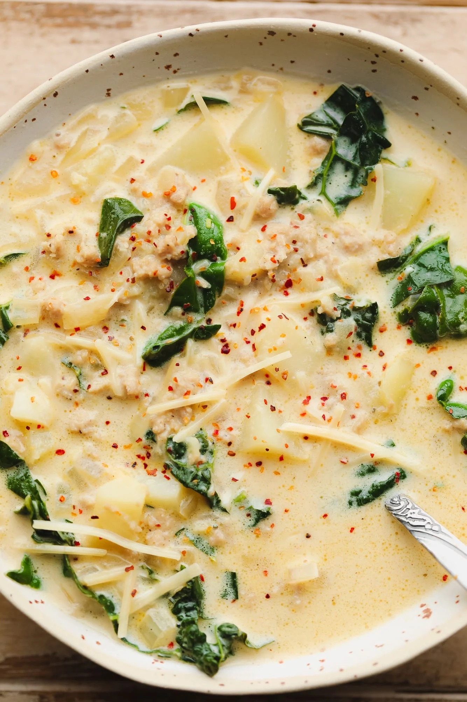

Zuppa Toscana

This luscious and creamy Vegan Zuppa Toscana recipe is even better than Olive Garden!
It’s a rich and comforting soup made with vegan sausage, vegan cream, garlic, kale, and potatoes.
This recipe is quick to make with staple ingredients on hand. Everything comes together with minimal
active time and can be ready in 1 hour.
Ingredients
- 1 Large Yellow Onion
- 5 Cloves Garlic, Minced
- 3 Medium Russet Potatoes
- 3 Cups Chopped Kale
- 1 Cup Vegan Cream
- 14oz Spicy Vegan Sausage
- 1/4 Tsp Red Pepper Flakes
Instructions
- In a large soup pot, cook the vegan sausage crumbles and diced onion over medium heat until the sausage is lightly browned and the onion is translucent.
- Add the garlic and cooked until fragrant, about 1 minute.
- Add the broth, potatoes, kale and red pepper flakes. Bring to a boil, then reduce heat and simmer uncovered for 14 minutes or until the potatoes are soft.
- Stir in the vegan heavy cream and cook for a few minutes. Taste; add more salt and pepper as desired.
- Enjoy!
Credit to Nora Cooks for the recipe